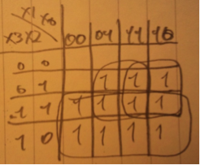
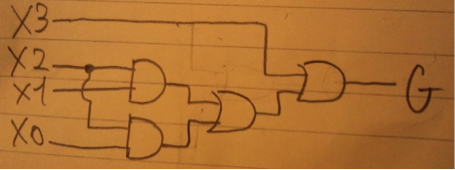
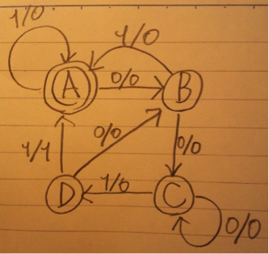
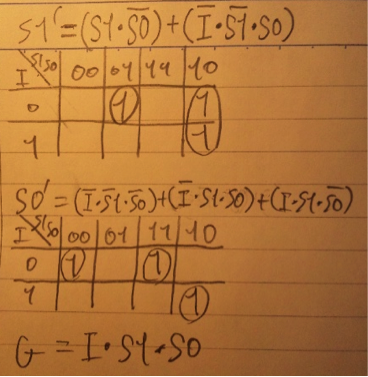
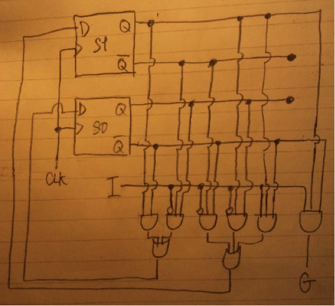
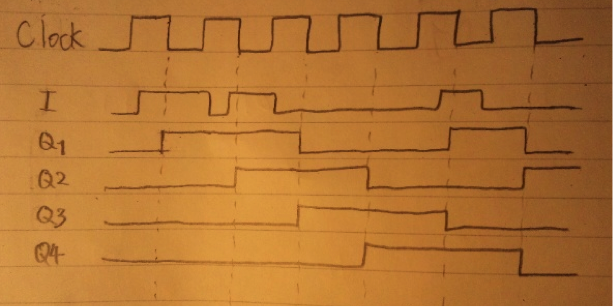
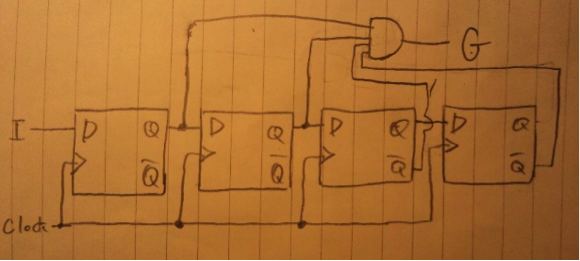

| X3 | X2 | X1 | X0 | G |
| 0 | 0 | 0 | 0 | 0 |
| 0 | 0 | 0 | 1 | 0 |
| 0 | 0 | 1 | 0 | 0 |
| 0 | 0 | 1 | 1 | 0 |
| 0 | 1 | 0 | 0 | 0 |
| 0 | 1 | 0 | 1 | 1a |
| 0 | 1 | 1 | 0 | 1a |
| 0 | 1 | 1 | 1 | 1a |
| 1 | 0 | 0 | 0 | 1a |
| 1 | 0 | 0 | 1 | 1a |
| 1 | 0 | 1 | 0 | 1a |
| 1 | 0 | 1 | 1 | 1a |
| 1 | 1 | 0 | 0 | 1a |
| 1 | 1 | 0 | 1 | 1 |
| 1 | 1 | 1 | 0 | 1 |
| 1 | 1 | 1 | 1 | 1 |
真理値表より、
G = ((X3)*X2*(X1)*X0)
+(¬(X3)*X2*X1*¬(X0))
+(¬(X3)*X2*X1*X0)
+(X3*¬(X2)*¬(X1)*¬(X0))
+(X3*¬(X2)*¬(X1)*X0)
+(X3*¬(X2)*X1*¬(X0))
+(X3*¬(X2)*X1*X0)
+(X3*X2*¬(X1)*¬(X0))
+(X3*X2*¬(X1)*X0)
+(X3*X2*X1*¬(X0) )
+(X3*X2*X1*X0)
(4)でカルノー図から得た簡単化後の式をもとに、くくって結局は(4)の式になることを示せばよい。

より、
G = X3 + (X2*X0) + (X2*X1)
(4)より

ミーリーグラフで表すと、

| I | S1 | S0 | S1’ | S0’ | G |
| 0 | 0 | 0 | 0 | 1 | 0 |
| 0 | 0 | 1 | 1 | 0 | 0 |
| 0 | 1 | 0 | 1 | 0 | 0 |
| 0 | 1 | 1 | 0 | 1 | 0 |
| 1 | 0 | 0 | 0 | 0 | 0 |
| 1 | 0 | 1 | 0 | 0 | 0 |
| 1 | 1 | 0 | 1 | 1 | 0 |
| 1 | 1 | 1 | 0 | 0 | 1 |


4bitのシフトレジスタである。クロックの立ち下がりの度に、Q1=I , Q2=Q1 , Q3=Q2 , Q4=Q3 となる。つまりは一つ左隣の出力を、右にシフトするような回路である。


パターンが2^n bitのとき、(4)の回路の場合はlog n 個のFFで目的の回路を構成可能であるため、コストが低い。しかしながら柔軟性が低い上に回路が複雑で、設計が困難な上に少し仕様が変わっただけで回路構成を大きく変更する必要がある。
(6)の回路の場合はn個のFFが必要となるため、長いパターンの場合はコストが高くなる欠点があるが、その分柔軟性があり、非常にシンプルで設計しやすく、仕様変更にも対応しやすい。